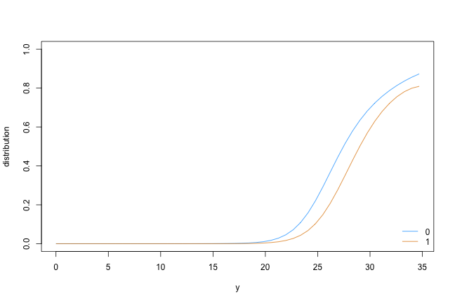

Software
A Simple Transformation Model
First, install and fire-up R on your computer. Within R, one needs to install the tram package by typing
install.packages("tram")
and hitting the ENTER key. Once the package is installed, you can load it using
library("tram")
## Loading required package: mlt
## Loading required package: basefun
## Loading required package: variables
Now all tram functions are ready to be used, for example the Colr() function for fitting a series of potentially stratified logistic regression models to a continuous outcome variable:
data("BostonHousing2", package = "mlbench")
library("survival")
BostonHousing2$y <- with(BostonHousing2, Surv(cmedv, cmedv < 50))
Colr_BH_1 <- Colr(y | 0 + chas ~ crim + zn + indus + nox +
rm + age + dis + rad + tax + ptratio + b + lstat,
data = BostonHousing2)
summary(Colr_BH_1)
##
## Continuous Outcome Logistic Regression
##
## Call:
## Colr(formula = y | 0 + chas ~ crim + zn + indus + nox + rm +
## age + dis + rad + tax + ptratio + b + lstat, data = BostonHousing2)
##
## Coefficients:
## Estimate Std. Error z value Pr(>|z|)
## crim 0.081681 0.013780 5.928 3.07e-09 ***
## zn -0.010334 0.004901 -2.109 0.0350 *
## indus -0.026959 0.021440 -1.257 0.2086
## nox 6.993759 1.486444 4.705 2.54e-06 ***
## rm -1.564653 0.221462 -7.065 1.61e-12 ***
## age 0.010271 0.005138 1.999 0.0456 *
## dis 0.506364 0.078110 6.483 9.01e-11 ***
## rad -0.124231 0.024848 -5.000 5.74e-07 ***
## tax 0.006643 0.001335 4.978 6.43e-07 ***
## ptratio 0.401473 0.048357 8.302 < 2e-16 ***
## b -0.006171 0.001106 -5.580 2.41e-08 ***
## lstat 0.279999 0.026532 10.553 < 2e-16 ***
## ---
## Signif. codes: 0 '***' 0.001 '**' 0.01 '*' 0.05 '.' 0.1 ' ' 1
##
## Log-Likelihood:
## -1292.479 (df = 26)
## Likelihood-ratio Test: Chisq = 880.7501 on 12 degrees of freedom; p = < 2.2e-16
The model can be used to extract the corresponding conditional distribution functions
nd <- BostonHousing2[c(1, 1),]
nd$chas <- sort(unique(BostonHousing2$chas))
library("colorspace")
col <- diverge_hcl(2, h = c(246, 40), c = 96, l = c(65, 90))
plot(as.mlt(Colr_BH_1), newdata = nd, type = "distribution", col = col)
legend("bottomright", legend = levels(nd$chas), col = col, lty = 1, bty = "n")
